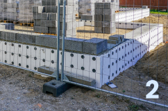
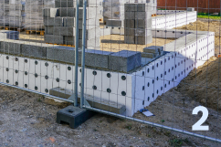
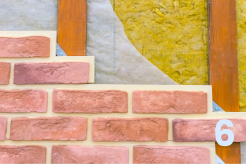
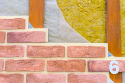

EJM LLC
Ein junges Unternehmen, welches bereits einen großen Teil des deutschen Marktes erobert hat, ist nun auch international vertreten!
Deutsche Qualität in der Ukraine, EJM LLC macht’s möglich.
Sind Sie auf der Suche nach einem zuverlässigen und kompetenten Auftragnehmer? Möchten Sie Ihr Haus, Ihre Wohnung oder ein Büro bauen oder renovieren? - Dann ist die EJM LLC in der Ukraine der genau passende Ansprechpartner für Sie.
Wir setzen alle Ihre Bauwünsche mit der deutschen Präzision und Qualität um.
Herstellung von Baustoffen
Materialqualität
Metallprofile
Holzbearbeitung
Trockenbau
Befestigungs-elemente
Das bieten wir an:
- Erstellung von Bauprojekten
- Fundamenterstellung
- Ausbauarbeiten
- Schlüsselfertige Konstruktion
- Erdarbeiten
- Fundamentarbeiten
- Bauarbeiten
- Abdichtung
- Monolithische Arbeiten und Dachdeckerarbeiten
- Verlegen von Fassaden und Wänden
- Kommunikationssysteme
- Innenausbau und vieles mehr.
Und das können Sie von uns erwarten:
Hohe Qualität der Ausführung
Hohe Qualität der Arbeit
Gewissenhafte Umsetzung des Projektes, ohne erforderliche Reparaturen nach einigen Monaten
Namenhafte Hersteller von Baustoffen
Namenhafte und zuverlässige Lieferanten
Eigene Spedition inklusive eigener Fahrzeuge
Etablierte Kontakte ermöglichen es uns, die besten Preise für den Bau von schlüsselfertigen Häusern anzubieten.


 



 
